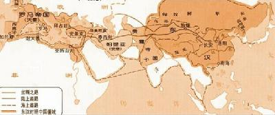
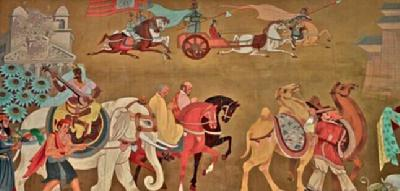
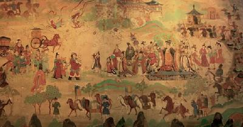
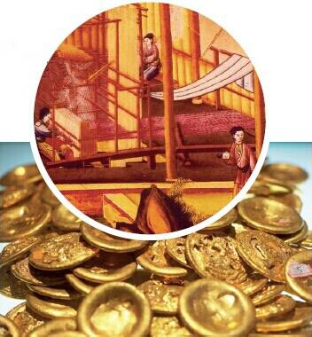
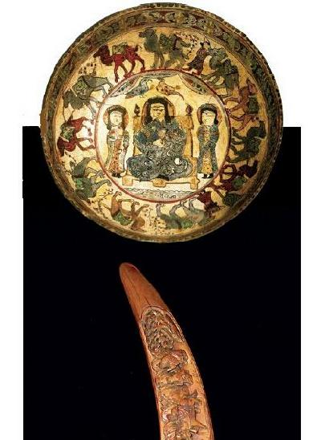

Ancient Silk Road reveals the Han and Tang Dynasties open and inclusive attitude
2100 years ago, the Chinese Han Dynasty Zhang Qian out of the Western Regions, since then the land of China and the Western states between the "diligent run station, not always in time; Shanghu vendors, the Japanese under the plug." Similarly, on the Silk Road on the Sea, Zheng He went down to the west, brought porcelain, tea, silk, craftsmen, and did not bring the governor, did not bring the ambition to expand and dominate.
Han and Tang Dynasties flourishing, once spent rain, the boat sentiment of the ancient Silk Road, highlighting the ancient Chinese civilization "peace, open, inclusive," the history of blood.
There are several pieces of ancient silk
From the Eurasian continent's cultural exchange channel, the academy is now more recognized that the Silk Road has three major routes: the desert oasis of the Silk Road, the Silk Road on the Sea and the grassland Silk Road.
Desert Oasis Silk Road, the traditional sense of the Silk Road, from the ancient Chinese capital Changan, Luoyang, the Central Asian countries, Afghanistan, Iran, Iraq, Syria and other places, to the Mediterranean, to Rome as the end, A total length of 6440 km. This road is considered to link the ancient East and West continent of the ancient civilization of the intersection of the road, and silk is the most representative goods along the road.
The Maritime Silk Road is a sea channel connecting ancient China with the rest of the world. It consists of the "East China Sea Route" and the "South China Sea route". East China Sea routes from China to the Korean Peninsula and the Japanese archipelago, South China Sea routes from China to Southeast Asia and the Indian Ocean region. Maritime Silk Road formed in the Qin and Han Dynasties, the development of the Three Kingdoms, the Sui Dynasty, prosperity in the Tang and Song Dynasties, the decline in the Ming and Qing Dynasties, is known as the most ancient maritime routes. The main port of the Silk Road on the sea has changed, but only Quanzhou is the starting point of the Silk Road recognized by the United Nations Educational, Scientific and Cultural Organization.
Grassland Silk Road is from the Central Plains region north, the more the Great Wall to the outside, through the Mongolian plateau, South Russia grassland to Europe's land trunk line. Ancient Chinese northern minorities to West Asia, Europe, silk and more to take this road. Because of its sections in the northern alpine region, from the transport of goods in addition to silk, the fur accounted for large, it is also known as "fur road."
In addition, in ancient China there is an important southwest Silk Road, formed in the Han Dynasty, starting from Luoyang, by Shaanxi, Sichuan, Yunnan, to Myanmar, India, is a deep in the mountains and forests of trade culture thoroughfare, It is the first link between the two ancient civilizations in China and India, and strengthened the connection between the Silk Road on the land and the Silk Road on the sea and played an important role in the Han and Tang dynasties.
What are the provinces of China
According to the above four "Silk Road", some scholars have statistics that China's provinces involved in the Silk Road are: Liaoning, Jilin, Shanxi, Inner Mongolia, Henan, Shaanxi, Gansu, Qinghai, Ningxia, Xinjiang, Shandong, Shanghai, Zhejiang, Fujian, Guangdong, Hainan, Hong Kong, Macao and Taiwan, Hubei, Chongqing, Sichuan, Yunnan, Guangxi and so on.
under the official lead of the ancient silk road trade
Silk Road to tribute (tribute and reward), border trade between the main trade, but also to carry out a wide range of private trade. For example, the Tang Dynasty ad hoc Honglu Si Temple and the Codex Office, to encourage tribute trade and trade or trade market. Song dynasty has been in this Shanghai, Guangzhou and other places set up the city department, specializing in the management of overseas trade. In addition to the official positive foreign trade, but also allow private sea trade. On the Silk Road on the land, many of the businessmen not only organized a large caravan for long-distance trafficking, but also the influx of urban organizations along the organization or separate business, or with the local Han businessmen in partnership.
Sui Dynasty official "Silk Road Merchants"
Sui Dynasty Kaihuang years (AD 581-600 years), the Ministry of Personnel Bureau of Pei moment in the Hexi Corridor to carry out investment activities, is the prelude to the prosperity of the Silk Road. After the reunification of the Sui Dynasty, China's strong national wealth, then through the Silk Road, vigorously operating the Western Regions.
During the opening of the year, the Ministry of Personnel and the Ministry of Personnel, Pei-chih, held a wide range of investment activities in order to expand the economic ties between the Sui and the Western Regions and make the economic and political influence of the Sui dynasty Rapidly expanding to vast areas of the Eurasian continent.
Since then, Sui also personally in the Yan branch of the mountain met with more than 30 countries in the Western King and envoys, decided to set up in Zhangye City, and sent a special envoy to promote official trade. In the "Zhangye event" under the influence of the great cause of six years (AD 61 years), the Western region has more countries to Luoyang. For the wide publicity, to promote international trade, the Sui Dynasty official held a one-month grand Luoyang international trade intercourse and entertainment conference, during which also held a grand art show, only orchestra accompanists have 18,000 people, song and dance performers Up to 3 million people, silk and bamboo sound, dozens of miles can hear.
Chinese silk, ancient silk on the "international settlement of the main currency"
On the Silk Road, silk is not just a commodity, but also a currency. Many of the bulk of trade is the use of silk as a currency to trade, especially the animals and slaves. For example, the Tang Dynasty Dunhuang and Turpan area of the horse price is generally in the 15 training (Pianjian refers to a certain number of silk training) or so, the second in about 10 training, while the slaves of the trading price of up to 40 practice.
Another advantage of using silk as a currency is not going to depreciate. Silk Road along the way, especially in China's northwest region through the Persian silver coins, coins and silk three currencies. According to historical records, Tang Wu Zhou (690 years ago) to Tianbao period (745 years ago) 55 years, silver and silk between the exchange rate has been a practice for ten dollars, while the coin is depreciated by about 30% The Obviously, relatively speaking, silk training for the Chinese and Western parties have a recognized value, a higher reputation, can be used as a hard currency to use.
on the ancient Silk Road, "mutual benefit and win-win"
Papermaking, printing, gunpowder of the West, the best reflection of China's great contribution to the development of world civilization. In the early 4th century AD, Chinese paper had been spread by Sogdians to Central Asia and later to Africa and Europe. Until the end of the eighteenth century, European countries were still using Chinese papermaking paper. With the spread of papermaking, Chinese printing is also spread to the West. 8th century, China's gunpowder technology, along with alchemy together into the Arab countries, known as the "Chinese snow."
the export of goods to silk, tea, porcelain, gold, silver, and so on, Book-based.
along the Silk Road into China, the great influence of religion, it was called the Silk Road as a "religious road." Nestorianism, Manichaeism, Islam and so on, so that the Chinese religion is further diversified. Tang Dynasty, Buddhism, Taoism prevailed. Many Chinese monks went to Tianzhu for law, Master Xuan Zang is an outstanding representative.
In addition, through the Silk Road, foreign cultural skills and goods also poured into China. Through the Silk Road into China's cultural skills are: sugar, wine technology, shipbuilding suture technology, East Rome, Arabia, Persia, Central Asian countries, India's medicine, music, song and dance, astronomy, calendar and so on. The goods imported into China through the Silk Road are: grapes, alfalfa, flax, cucumber, pepper, aloe, walnut, glass, carpet, wool, sapphire, gem, ivory, gold and silver, agate, amber, incense and so on.
This article is from China Development Network Click to view original